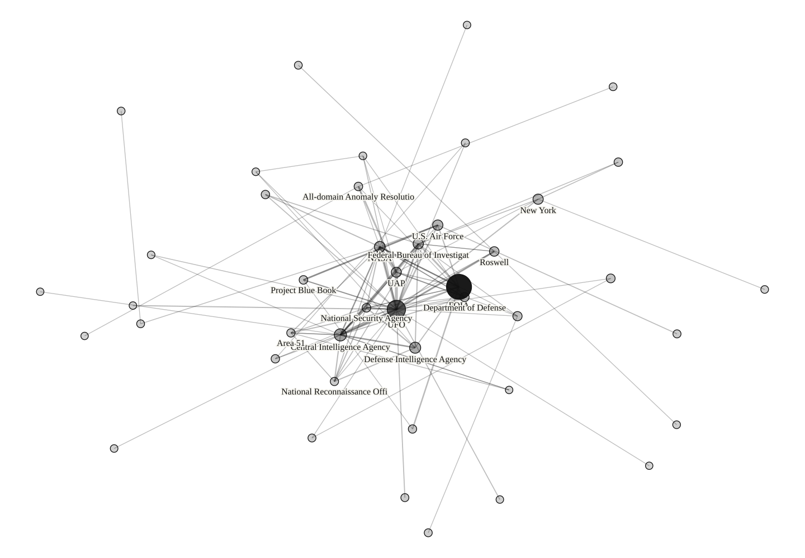
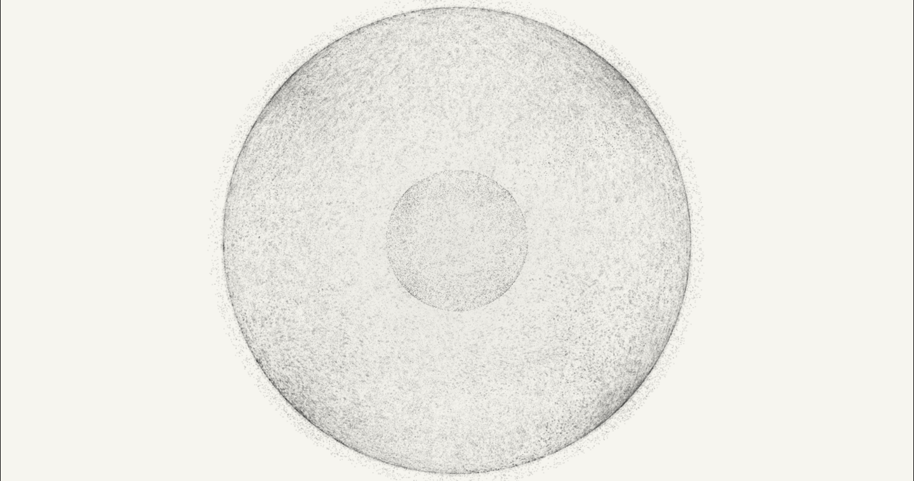
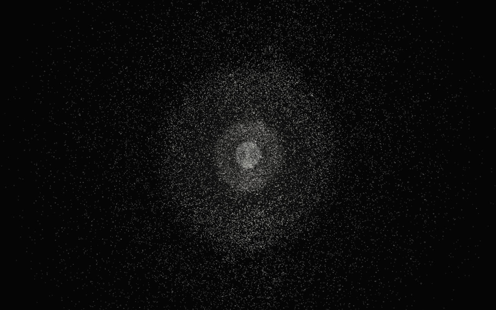
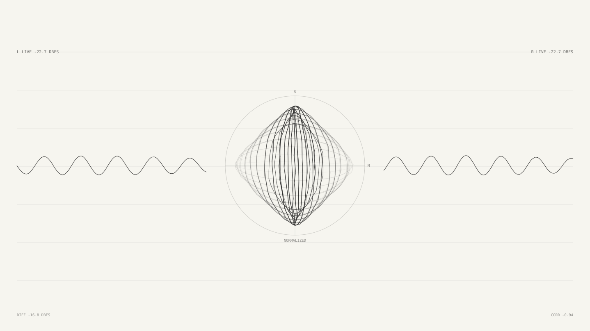

UFO Files
Search public UFO and UAP records, follow connections, and inspect the source documents.
About the Project
Public UFO records, connected.
UFO Files indexes public documents, transcripts, reports, and research notes. Search the archive, compare records, and follow each claim back to its source.
View Data ArchiveReading both live archive indexes.
Download the source data and graph exports.
Open the document or transcript behind a claim.
New releases and corrections are added as they arrive.

Relationship Graph
See how the names, places, programs, and events connect.
Browse the archive as a network. Start with a person, document, program, place, or event, then follow its links across the record.
Launch Graph
Dog Whistle
Send a signal and watch the sky answer.
Dog Whistle generates precise layered tones for experiments with UAP activity. Choose a tone, run a session, and record what happens.
Open Dog Whistle
Meditation
Breathing, sound, and a map of nearby stars.
Set a breathing pace, mix the audio layers, and use the Gaia DR3 star field as a visual focus.
Open Meditation
Entrainment
Explore the space between sound and consciousness.
Entrainment recreates the binaural stereo signal design described in US5213562A and adds an app-defined HRTF spatial mode, without presenting claimed outcomes as established science. Configure carrier pairs or the spatial field, then inspect live PCM output and the mid-side vectorscope.
Open EntrainmentContact
Send documents, corrections, leads, or provenance notes.
Anonymous tips are welcome. Corrections and source improvements can also be proposed through GitHub.